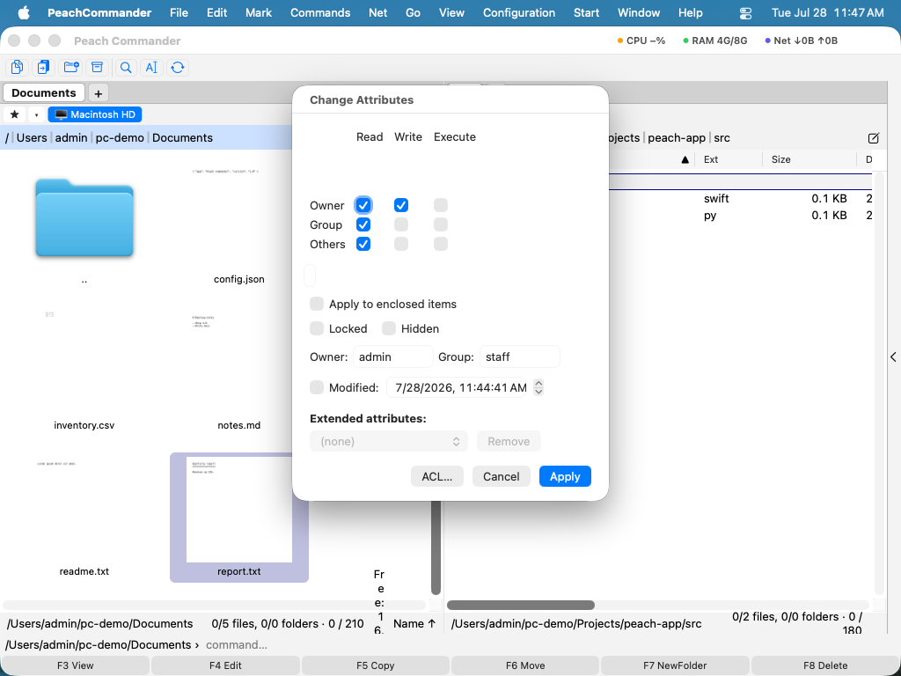

Attribute & Berechtigungen
Peach Commander ermöglicht es Ihnen, die systemnahen Metadaten von Dateien und Ordnern zu untersuchen und zu ändern, die der Finder meist außer Reichweite hält: POSIX-Lese-/Schreib-/Ausführungsberechtigungen, Eigentümer und Gruppe, Änderungs- und Erstellungsdatum, macOS-Flags wie „versteckt" und „gesperrt" sowie erweiterte Attribute. Sie können auch die Zugriffssteuerungsliste (ACL) einer Datei bearbeiten, um feingranulare Regeln pro Benutzer oder Gruppe festzulegen, Links und Aliase erstellen, die auf andere Elemente verweisen, und eigene Kommentare anhängen. Diese Werkzeuge richten sich an fortgeschrittene Benutzer, die präzise Kontrolle darüber benötigen, wie sich Elemente verhalten und wer sie anrühren darf.
Attribute ändern
- Wählen Sie ein oder mehrere Elemente im aktiven Panel aus.
- Wählen Sie Datei > Attribute ändern….
- Legen Sie fest, was Sie benötigen: schalten Sie die Lese-/Schreib-/Ausführungskästchen für Eigentümer, Gruppe und alle um (oder geben Sie direkt einen Oktalwert ein), ändern Sie Eigentümer oder Gruppe, kippen Sie die Flags „versteckt" oder „gesperrt" und setzen Sie das Änderungs- oder Erstellungsdatum. Verwenden Sie Aktuelle verwenden für die aktuelle Zeit oder kopieren Sie ein Datum von einer anderen Datei.
- Um dieselbe Änderung durch den Inhalt eines Ordners anzuwenden, aktivieren Sie die rekursive Option und wählen Sie, ob sie Dateien, Ordner oder beides betrifft.
- Klicken Sie auf OK, um die Änderung auszuführen. Rekursive Änderungen laufen als Hintergrundaufgabe mit einem Fortschrittsbalken.

(Abbildung: Der Dialog „Attribute ändern". Gemischte Werte über eine Mehrfachauswahl hinweg werden als Bindestrich angezeigt, bis Sie sie festlegen.)Eine ACL bearbeiten
Für Regeln, die über das grundlegende Modell aus Eigentümer/Gruppe/alle hinausgehen, bearbeiten Sie die Zugriffssteuerungsliste des Elements.
- Öffnen Sie Datei > Attribute ändern… und öffnen Sie von dort aus den ACL-Editor.
- Jede Zeile ist eine Regel: der Benutzer oder die Gruppe, für den bzw. die sie gilt, ob sie erlaubt oder verweigert, und welche Berechtigungen (Lesen, Schreiben, Löschen usw.) sie gewährt.
- Fügen Sie Zeilen hinzu, entfernen oder bearbeiten Sie sie und speichern Sie dann, um die Liste in das Element zurückzuschreiben.
Links, Aliase und Kommentare erstellen
- Datei > Symbolischen Link erstellen… erstellt einen symbolischen Link (Symlink), der über den Pfad auf das Element unter dem Cursor verweist.
- Datei > Harten Link erstellen… erstellt einen harten Link auf dieselben Dateidaten. Harte Links funktionieren nur für Dateien auf demselben Volume.
- Datei > Alias erstellen… erstellt einen macOS-Alias, dem auch der Finder folgen kann.
- Datei > Kommentar bearbeiten… (Ctrl+Z) öffnet einen Texteditor für einen dateibezogenen Kommentar. Kommentare können in einer eigenen Spalte und in Statushinweisen angezeigt werden.
Tastenkürzel
| Aktion | Tastenkürzel |
|---|---|
| Kommentar bearbeiten | Ctrl+Z |
Hinweise
- Das Ändern von Eigentümer oder Gruppe erfordert in der Regel Rechte, die Sie als normaler Benutzer nicht haben; wenn das der Fall ist, wird die Änderung als fehlgeschlagen gemeldet, statt angewendet zu werden, und der Rest Ihrer Änderungen wird trotzdem durchgeführt.
- Kommentare werden in einer Datei
descript.ionneben Ihren Elementen gespeichert und können je nach Ihren Einstellungen auch als Finder-Kommentare geführt werden. Beide werden beim Anzeigen eines Kommentars gelesen. - Ein symbolischer Link und ein Alias verweisen beide auf ein Ziel, aber ein symbolischer Link speichert einen einfachen Pfad, während ein Alias eine macOS-Referenz speichert, die weiterhin funktioniert, wenn das Ziel verschoben oder umbenannt wird. Ein harter Link ist ein zweiter Name für dieselben Dateidaten, kein Verweis.